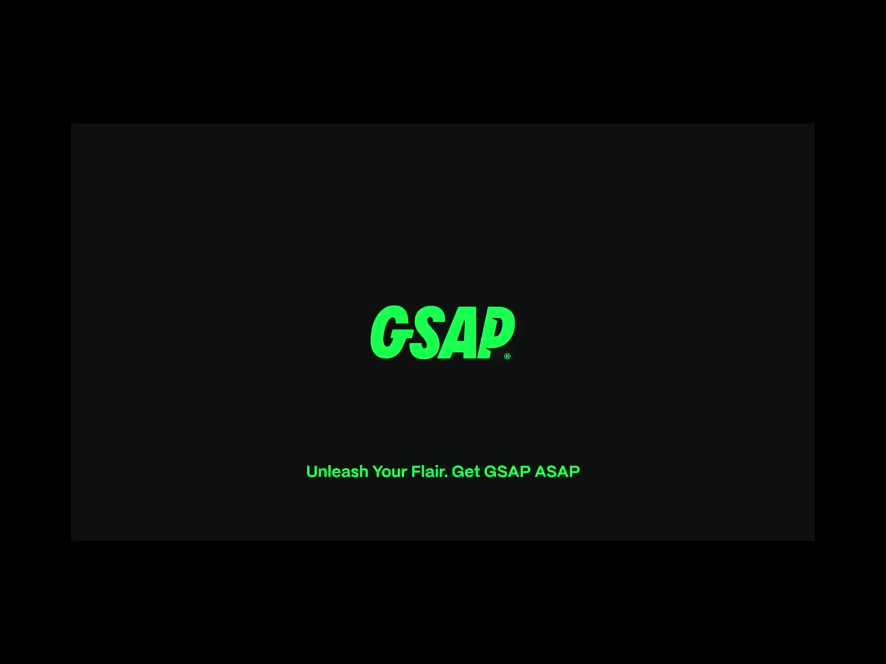

Publicado em 29 de Junho de 2025 • Leitura de 5 min

Animações com CSS e bibliotecas como a AOS são fantásticas para adicionar um 'fade-in' ou um 'slide' simples em um elemento. Mas e quando você precisa de mais? E quando você quer criar uma sequência coreografada, onde vários elementos dançam na tela com controle total sobre o tempo e a interação, quase como em uma produção de vídeo?
É aqui que entra a GSAP (GreenSock Animation Platform). Pense nela como o 'Adobe After Effects' do desenvolvimento web. É uma biblioteca JavaScript de alta performance, padrão da indústria, feita para criar animações complexas com total controle. Neste artigo, vou compartilhar como implementei animações mais sofisticadas no meu portfólio usando a GSAP e como você também pode dar seus primeiros passos.
Seção 1: O Básico - Instalação e Primeira Animação
1.1. Configuração via CDN
A forma mais fácil de começar a usar a GSAP é através de um CDN. Não é preciso instalar nada, apenas adicionar os scripts no seu arquivo HTML, de preferência antes de fechar a tag
. Nós precisaremos de dois arquivos: o principal da GSAP e o seu plugin mais famoso, o ScrollTrigger, para animações baseadas na rolagem.
<!-- BIBLIOTECA DE ANIMAÇÃO GSAP E PLUGIN SCROLLTRIGGER -->
<script src="https://cdnjs.cloudflare.com/ajax/libs/gsap/3.12.2/gsap.min.js"></script>
<script src="https://cdnjs.cloudflare.com/ajax/libs/gsap/3.12.2/ScrollTrigger.min.js"></script>
<script src="seu-script-principal.js" defer></script>
1.2. Sua Primeira Animação: gsap.from()
A forma mais intuitiva de animar com a GSAP é com o método gsap.from(). Ele funciona assim: você define no CSS como o elemento deve ser no seu estado final, e no JavaScript você diz ao GSAP de qual estado inicial ele deve animar. Vamos animar um título para que ele deslize de baixo para cima.
// Dentro do seu arquivo de script
// Anima o elemento com a classe '.meu-titulo'
gsap.from(".meu-titulo", {
duration: 1.2, // A animação dura 1.2 segundos
y: 100, // O estado inicial é 100px ABAIXO da posição final
opacity: 0, // O estado inicial é totalmente invisível
ease: "power3.out" // Efeito de desaceleração suave no final
});
Seção 2: Sequenciando Animações com Timelines
E se quisermos criar uma sequência, onde um elemento anima primeiro e o outro logo em seguida? Para isso, a GSAP tem as Timelines, que funcionam exatamente como uma timeline de um software de edição de vídeo.
Com a timeline, podemos encadear quantas animações quisermos. O parâmetro "-=0.8" é um truque para criar uma sobreposição suave, fazendo com que a segunda animação comece um pouco antes da primeira terminar, criando um efeito mais fluido.
Seção 3: O Poder do ScrollTrigger
Agora, a parte mais divertida. Vamos fazer uma animação que só começa quando o usuário rola a página até uma determinada seção. É para isso que usamos o plugin ScrollTrigger. A lógica é simples: nós definimos um 'gatilho' (trigger), que é o elemento que, ao entrar na tela, dispara a animação. Também definimos quando a animação deve começar (start).
// Primeiro, "registramos" o plugin
gsap.registerPlugin(ScrollTrigger);
// Anima a coluna da imagem quando a seção #sobre entra na tela
gsap.from("#sobre .coluna-da-imagem", {
scrollTrigger: {
trigger: "#sobre", // Gatilho da animação
start: "top 80%", // Começa quando o topo da seção atinge 80% da altura da tela
},
x: -100, // Começa 100px à ESQUERDA
opacity: 0,
duration: 1.5,
ease: "power3.out"
});
Nota: Para que este exemplo funcione, certifique-se de que a div que contém a imagem na sua seção 'Sobre' tenha a classe coluna-da-imagem no seu arquivo HTML.
Conclusão
Neste artigo, arranhamos a superfície do que a GSAP pode fazer. Vimos como criar animações básicas com gsap.from(), como acioná-las com a rolagem da página usando o ScrollTrigger e como sequenciá-las com timeline.
Aprender GSAP abriu um novo leque de possibilidades para mim, permitindo aplicar conceitos de motion design diretamente no desenvolvimento web. É a ferramenta perfeita para quem, como eu, ama tanto a lógica do código quanto a arte do movimento. Espero que este guia tenha te inspirado a começar a dar vida aos seus próprios sites!